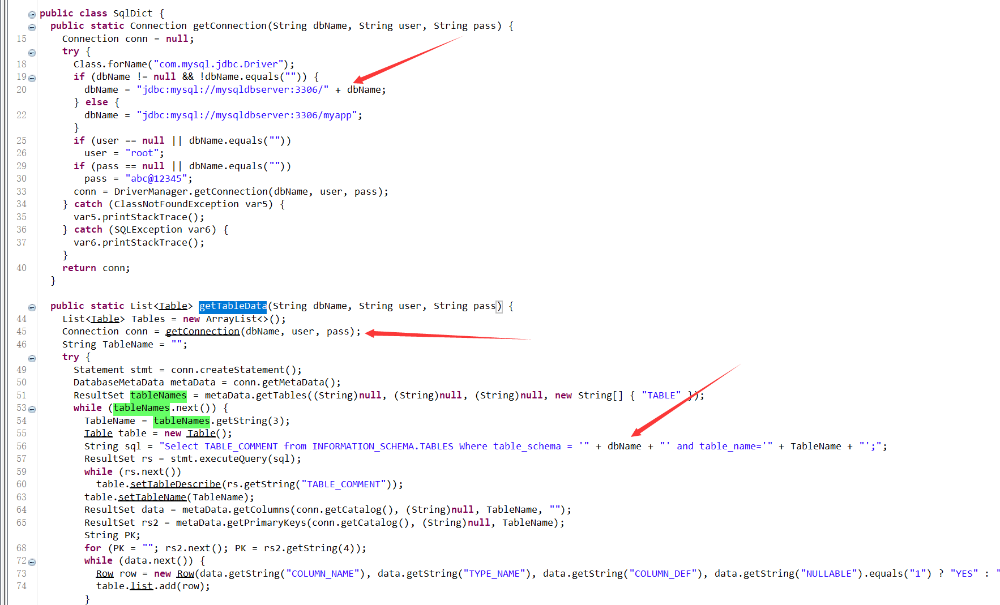

做题步骤
题目分析
开启题目环境，下载附件，将得到的class文件反编译
经过代码审计之后，不难发现，这里有一个JDBC的sql注入漏洞
sql注入分析
在Test.class中，/common/test/sqlDict路由下面，调用了SqlDict#getTableData方法
跟进这个方法

先是建立数据库的连接(SqlDictData#getConnection)
在getConnection方法的逻辑中，如果没有传入dbName的话，它默认是myapp数据库名root用户和abc@12345密码
回到getTableData方法中，并不是采用的预编译的方式，而是直接将dbName带入进行查询，这里就存在了注入
后面就是一些查询数据的代码了
注入细节
这里有一个小绕过，我们要想顺利进行到sql注入中，首先要保证在连接数据库的时候不会报错，不然又啷个注入嘛
我们使用#来混淆数据库连接
payload:
myapp#'union select 1#说明可以进行注入操作
得到账号为admin密码为admin@Rrrr_ctf_asde
寻找登陆点
得到了账号密码，但是没有给出登陆路由
我们可以发现，他导入了import io.swagger.annotations.ApiOperation;
swagger包是ui作用，默认的页面有swagger-ui.html
进行登陆

反序列化
在返回的data中有一个经过base64编码后的序列化字符串，应该要进行反序列化操作，看看是否能够利用
这里就是那个认证凭证
我们需要判断这个是一个什么链子
通过插件辅助判断为ROME链，当然也可以将他解码
直接使用ysoserial链子打
成功反弹shell
I'm so cute. Please give me money.


- Post link: https://roboterh.github.io/2022/04/09/%E7%BD%91%E9%BC%8E%E6%9D%AF2020Think-Java/
- Copyright Notice: All articles in this blog are licensed under unless otherwise stated.